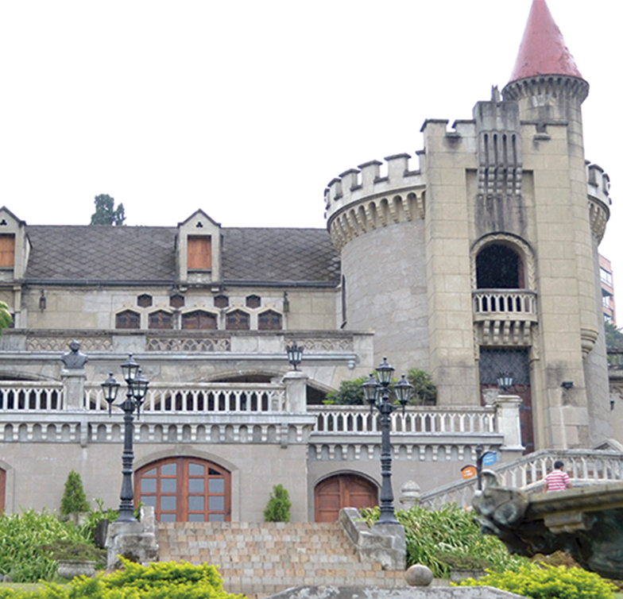
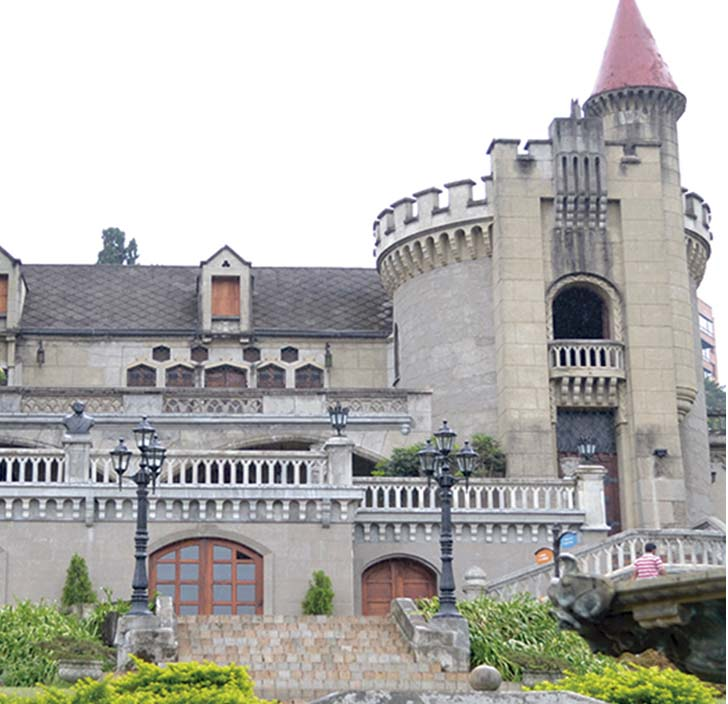

<html>
<head>
<meta charset="utf-8">
	<link rel="stylesheet" type="text/css" href="../estilos/estilosinternas.css">
	<link rel="shortcut icon" href="../favicon.jpg" />
	<link rel="stylesheet" type="text/css" href="../fonts/style.css">

	<title>Historia</title>
</head>
<body>
	<div id="caja_superior">


<a href= "https://www.facebook.com" id="facebok"><span class="icon-facebook"></span></a>
<a href="https://www.twitter.com" id="twiter"><span class="icon-twitter-with-circle"></span></a>
<a href="https://www.plus.google.com" id="google"><span class="icon-google-with-circle"></span></a>
<a href="https://www.youtube.com" id="youtube"><span class="icon-youtube"></span></a>
</div>

</body>
</html>

<header>


</header>


<nav>

	<ul>
	<li><a href="../index.html" target="_new" id="home">Home <span class="icon-home"></span></a></li>
	<li><a href="../index.html" target="_new" id="home2"> <span class="icon-home"></span></a></li>

	<li><a href="../paginas/history.html" target="_new" id="historia">Historia<span class="icon-hour-glass"></span></a></li>
	<li><a href="../paginas/history.html" target="_new" id="historia2"><span class="icon-hour-glass"></span></a></li>

	<li><a href="../paginas/jardin.html" target="_new" id="jardines">Jardines<span class="icon-leaf"></span></a></li>
	<li><a href="../paginas/jardin.html" target="_new" id="jardines2"><span class="icon-leaf"></span></a></li>

	<li><a href="../paginas/tarantel.html" target="_new" id="tarantela">Tarantela<span class="icon-shop"></span></a></li>
	<li><a href="../paginas/tarantel.html" target="_new" id="tarantela2"><span class="icon-shop"></span></a></li>

	<li><a href="../paginas/actividad.html" target="_new" id="actividades">Actividades<span class="icon-hand"></span></a></li>
	<li><a href="../paginas/actividad.html" target="_new" id="actividades2"><span class="icon-hand"></span></a></li>

	<li><a href="../paginas/edito.html" target="_new" id="editorial">Editorial<span class="icon-pencil"></span></a></li>
	<li><a href="../paginas/edito.html" target="_new" id="editorial2"><span class="icon-pencil"></span></a></li>
	</ul>

	<input type="search" name="busqueda" id="busca">

	</nav>

	 </img>
	<h1 id="titulo1"> HISTORIA </h1>
	<p id="titulo2"> La casa de los Echavarría</p>

	<section id="bannerudem"></section>

	<p id="parrafocel">
	MUSEO EL CASTILLO <br> <br>
	Más que un museo, un lugar histórico, la memoria colectiva hecha castillo, un legado de aquellos que hicieron ciudad con sus ideas, un gigante de la arquitectura, un referente de unión entre las familias antioqueñas y las que sin serlo parecían haber nacido bajo las mismas montañas, una conjución entre lo moderno y lo antiguo, entre lo nuevo y lo viejo, entre un hogar convertido museo y un museo que acoge como propios a quienes lo visitan.</p>
		


	<p id="parrafoprincipal">Localizado en la reconocida Loma de los balsos, parte fundamental del Poblado, barrio que año tras año ha ganado mucho reconocimiento en la ciudad por su crecimiento residencial y comercial, el Museo El Castillo ubicado en medio de torres y edificios modernos, parece ser una muy ilusoria infraestructura salida de cuentos de hadas dada su extravagancia y la arquitectura que lo conforma, esa que siendo sumamente llamativa ha generado contrastes enormes con ese otro lado del Medellín innovador.</p>
	
	

	<div id="borde"></div>

	
	

	<div id="borde2"></div>

	 </img>


	<p id="parrafo_secundario"> Fue precisamente para los años 30 que El Museo El Castillo, gracias a la petición del señor José Tobón Uribe, comenzó a crecer en medio de la tasita de plata e imitando los castillos del Valle del Loira en Francia, también se rodeó de hermosos jardines. <br> </br>
	Su estilo gótico medieval construido por H.M. Rodríguez, primera firma constructora de la ciudad, fue el aposento del ya mencionado señor Tobón, y posteriormente, en el año 1943, lugar de residencia de Don Diego Echavarría que junto con su esposa la linda Doña Benedikta  remodelaron parte de la infraestructura ampliando los salones para que su hogar se convirtiera en un legado de ciudad lleno de historia y cultura. Para el año 1971 el modelo residencial previsto para el armazón había desaparecido y el propósito de hacer de esta edificación una Casa Museo, pasó a ser realidad como esas otras edificaciones que el mismo Don Diego construyó también, La Casa Ditaires, La Biblioteca de ItagÜí y El Hospital San Vicente Fundación son algunas de ellas.<br></br>
	Para el año de hoy, aproximadamente 90 años después de que la estructura estuviese en planos traídos directamente desde París, El Museo El Castillo es una fundación privada sin ánimo de lucro cuyo fin principal recae en promocionar el arte y la cultura a quienes lo visiten y a quienes sin haber ido, encuentran en este lugar una experiencia maravillosa por descubrir y por disfrutar.</p>

	<div id="cajaroja1">

<section id="banneraizon"></section>

<nav id="navinf">
	<ul>
	<li><a href="../index.html" target="_new" id="home">Home <span class="icon-home"></span></a></li>
	<li><a href="../paginas/history.html" target="_new" id="historia">Historia<span class="icon-hour-glass"></span></a></li>
	<li><a href="../paginas/jardin.html" target="_new" id="jardines">Jardines<span class="icon-leaf"></span></a></li>	
	<li><a href="../paginas/tarantel.html" target="_new" id="tarantela">Tarantela<span class="icon-shop"></span></a></li>
	<li><a href="../paginas/actividad.html" target="_new" id="actividades">Actividades<span class="icon-hand"></span></a></li>
	<li><a href="../paginas/edito.html" target="_new" id="editorial">Editorial<span class="icon-pencil"></span></a></li>
	</ul>
</div>

<section id="banneraizon2"></section>

<input type="search" name="busqueda" id="busca2">

<a href= "https://www.facebook.com" id="facebok2"><span class="icon-facebook"></span></a>
	<a href="https://www.twitter.com" id="twiter2"><span class="icon-twitter-with-circle"></span></a>
	<a href="https://www.plus.google.com" id="google2"><span class="icon-google-with-circle"></span></a>
	<a href="https://www.youtube.com" id="youtube2"><span class="icon-youtube"></span></a>

<div id="cajacafe"><footer> COPYRIGHT 2017 AIZOON SA. & CIA. </br>
TÉRMINOS Y CONDICIONES POLÍTICA DE PRIVACIDAD Y USO DE INFORMACIÓN PERSONAL SUPERINTENDENCIA DE INDUSTRIA Y COMERCIO</br>
NIT 890901353-2 DIRECCIÓN CARRERA 43 A N° 68 A SUR 30, SABANETA - ANTIOQUIA, COLOMBIA</br>
CONMUTADOR (57) (4) 5062470 BOGOTÁ (57) (1) 4156767 FAX (57) (1) 4157507 LÍNEA DE ATENCIÓN AL CLIENTE (57) (4) 2186547</footer></div>
<div id="cajaroja2"></div>


